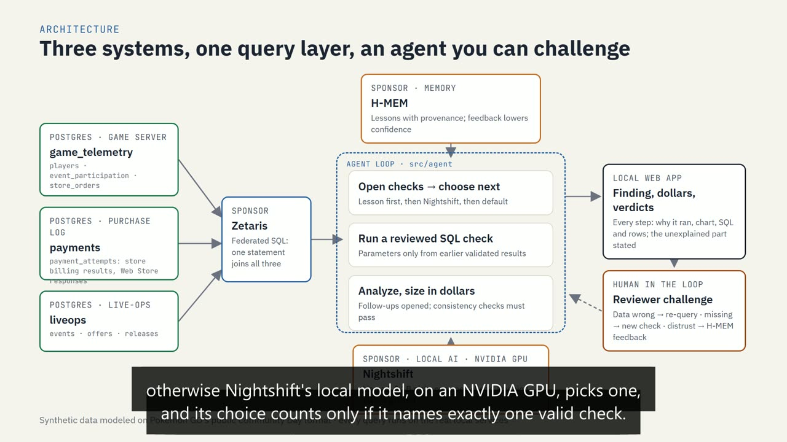
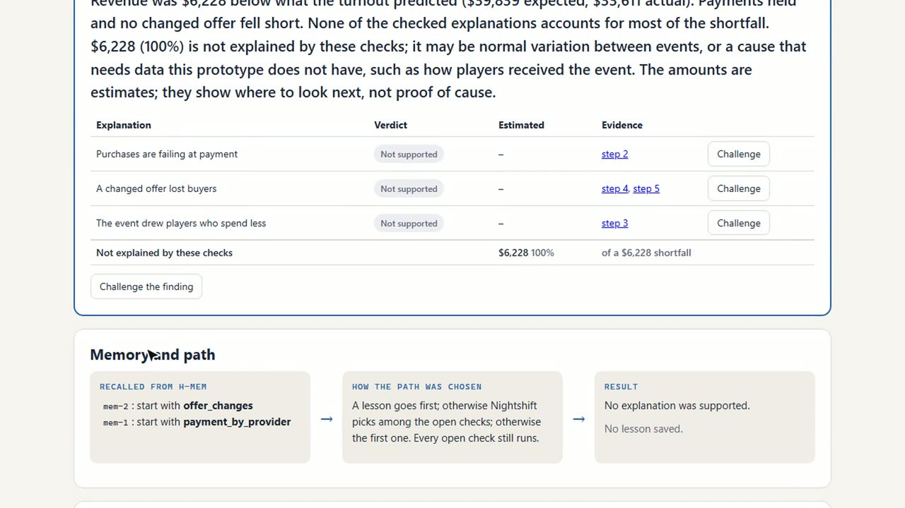
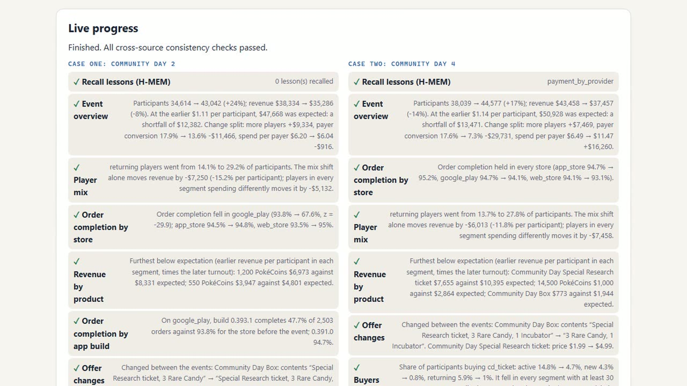

Solo · AI-assisted (Claude Code) · Open Agent Hackathon 2026独立 · AI 协助开发（Claude Code）· Open Agent Hackathon 2026
LiveOps Investigator
TypeScript · Postgres · Federated SQL · Local LLM
More players showed up for a live event, but revenue didn't keep up. This agent follows the evidence across the game server, the store purchase log and the live-ops calendar, puts a dollar estimate on each explanation, says what it can't explain, and lets a reviewer challenge every step. All data is synthetic; the findings are leads with dollar estimates, not causal proof. 活动来的人更多了，收入却没跟上。这个 Agent 在游戏服务器、商店支付日志和运营日历三套数据之间追查证据，给每个解释估出金额，明确说出它解释不了的部分，而且每一步都允许人工质疑。数据全部是合成的；结论是带金额估计的线索，不是因果证明。
Problem问题
A dashboard shows the revenue gap, but not why, or how much each cause accounts for. The answer is split across systems that don't share data.
仪表盘看得到收入缺口，看不到原因，也看不到每个原因占多少。答案分散在互不相通的几套系统里。
Decision决策
Keep every number deterministic: reviewed SQL templates, fixed statistics and verdicts. The model only picks which open check runs next.
所有数字都由确定的流程算出：审核过的 SQL 模板、固定的统计方法和判定规则。模型只负责选下一个跑哪项检查。
Outcome结果
Three cases solved end to end, including one where the right answer is "not explained" and the agent says so.
三个案例从头到尾跑通，其中一个的正确答案是「解释不了」，Agent 也如实这么说。
How an investigation runs一次调查怎么跑
Measure the gap量出缺口
Split the revenue change into players × payer conversion × spend per payer, and compare it with what turnout predicted.
把收入变化拆成人数 × 付费率 × 客单价，再和按人数推算的应得收入比较。
Drill down逐项深挖
Each reviewed SQL check opens only the follow-ups its result justifies. Every open check runs.
每项审核过的 SQL 检查只打开结果支持的后续检查，所有打开的检查都会跑完。
Size and state估金额、下结论
Each explanation gets a verdict and a dollar estimate; the remainder is reported as unexplained.
每个解释给出判定和金额估计，剩下的部分写明「解释不了」。
One query joins all three sources through Zetaris. A solved case stores a lesson in H-MEM; later cases try that check first. That changes the order, not which evidence is collected.有一条查询通过 Zetaris 同时连接三个数据源。解决过的案例会在 H-MEM 里存一条经验，之后的案例先试这项检查；这只改变顺序，不改变收集到的证据。
The model doesn't touch the numbers模型不碰数字
A local 1B model (Llama 3.2 via Nightshift, on a laptop GPU) chooses the order of checks. It never writes SQL, states a number or gives a verdict. Its reply counts only if it names exactly one valid check; anything else falls back to the default order. SQL parameters come from the case definition or earlier validated results, never from model text. A rate drop counts only if it is more than 5 points, on at least 200 orders per period, with |z| ≥ 3. Consistency checks stop the run if the parts don't add up: the three-way split must equal the revenue change, and completed orders must match successful payment attempts.
本地 1B 模型（Llama 3.2，经 Nightshift 跑在笔记本 GPU 上）只决定检查的顺序，从不写 SQL、不报数字、不下判定。它的回复只有在恰好点名一项有效检查时才算数，否则按默认顺序走。SQL 参数只来自案例定义或之前验证过的结果，不取模型生成的文字。一个比率下降要超过 5 个百分点、每期至少 200 单、|z| ≥ 3 才算数。各部分加不起来时，一致性检查会直接停止运行：三项拆分之和必须等于收入变化，完成的订单数必须等于成功的支付次数。

Three cases, three different answers三个案例，三种答案
The scenario follows the public format and list prices of a mobile game's Community Day. Three problems are planted in the generated data, and the agent is never told about them.
场景参照一款手游的「社区日」活动的公开形式和定价。生成的数据里埋了三个问题，Agent 事先并不知道。
- Case 1 — payments. Turnout +24%, revenue $12,382 short of what it predicted. Google Play order completion fell from 93.8% to 67.6%, concentrated on one app build. About $4,943 is failed orders; about $7,250 is a shift toward lower-spending players.
- 案例一：支付。人数 +24%，收入比按人数推算少 $12,382。Google Play 订单完成率从 93.8% 降到 67.6%，集中在一个客户端版本。约 $4,943 来自支付失败，约 $7,250 来自低消费玩家占比上升。
- Case 2 — the offer. Payments healthy. The ticket rose from $1.99 to $4.99 and the bundle lost it. About $3,911 is the offer, about $6,013 the player mix, and $3,547 is unexplained.
- 案例二：商品。支付正常。门票从 $1.99 涨到 $4.99，礼盒里也不再含门票。约 $3,911 来自商品改动，约 $6,013 来自玩家结构，$3,547 解释不了。
- Case 3 — no cause in the data. Payments held and no offer changed. All $6,228 is reported as unexplained, rather than pinned on a cause.
- 案例三：数据里没有原因。支付正常，商品也没变。$6,228 的缺口全部标为「解释不了」，没有硬套一个原因。

Built to be challenged为被质疑而设计
The web app shows why each step ran, its chart, SQL and rows. A reviewer can say the data looks wrong (the step's SQL is re-run and dependent findings are marked disputed), that something is missing (a new check runs, e.g. revenue by country), or that they don't trust a lesson (its confidence in memory drops). 24 automated tests cover the generator, the agent and the review actions.
网页应用展示每一步为什么跑、对应的图表、SQL 和数据行。审核人可以说「数据不对」（重新执行这一步的 SQL，依赖它的结论标为有争议）、「漏了东西」（跑一项新检查，比如按国家看收入），或「不信这条经验」（降低它在记忆里的可信度）。24 个自动化测试覆盖数据生成、Agent 和审核操作。
